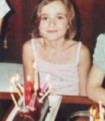
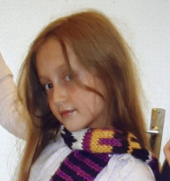
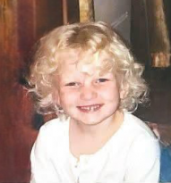
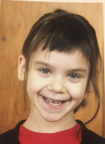
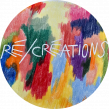

Albane Barrau, 27 ans
Pauline Delfino, 26 ans
Emma Duquet, 27 ans
Alice Velte, 27 ansL'association Ré/créations est née du tournage du film "Pierre, papier ciseaux", au cours duquel nous tournons quelques séquences dans une école. Nous devenons amies et découvrons ensemble ce que c'est, que de faire du cinéma. Surtout, naît l'envie de faire des films non plus sur, mais avec les enfants.
Nous créons Ré/créations en janvier 2024, avec l'envie d'expérimenter des façons de fabriquer des images artisanalement et collectivement, afin de faire découvrir aux enfants des techniques de "ciné-débrouille" et d'apprendre avec elleux à bricoler des films.
Nous sommes aujourd'hui quatre artistes et nous tentons d'imaginer et renouveler des dispositifs de co-création avec les jeunes, dans le cadre d'ateliers ponctuels ou de projets au plus long cours. Nous oeuvrons également à la valorisation des films d'ateliers en les programmant dans des lieux amis.
